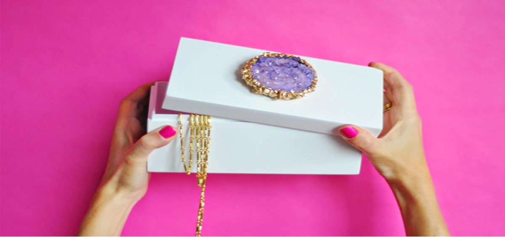

Make a Crystal-Topped Jewelry Box
“What do you give a friend who has everything?” You’ve said it before, and there’s no doubt you’ll say it again. But here’s an idea: one gift that even the owner of everything could use is a chic box to store all those stylish bibs and bobs in. (Pretty genius, right?) So you start to shop for a cool trinket box, and I’ll tell you, because I’ve done it — you either find the glamorous, glossy, $200 variety or the $10 job that doesn’t quite match the elegance of said friend.
What a pleasant surprise, then, that this DIY faux-geode trinket box — the one that looks like it could cost close to $250 — only requires about $20 worth of supplies, provided you already have food coloring and glue in your craft arsenal. And if you assume you need a lab coat and beakers to “grow” your own decorative crystals, think again. This project can be completed right on your kitchen counter — no science degree required.
What you’ll need:
- White pipe cleaners
- String
- Scissors
- Borax
- Heat-safe glass jar or container
- Measuring spoons
- Gel food coloring (liquid would work, too)
- Pencil
- Paint brush
- Testors Metallic Gold enamel paint
- Paint thinner
- E6000 glue
- Decorative box
Step 1: Create the base for the crystal. Using a few pipe cleaners, form a coil, weaving the ends in and through the coil’s layers as you go. This will help secure the disc-like shape.
Step 2: Cut a 12-inch long piece of string and thread it through one of the outer rings of the coil. Set the whole thing aside.
Step 3: Measure out 9 tablespoons of Borax into a heat-safe glass container or jar.
Step 4: Boil 3 cups of water in a small pot and mix in food coloring. (Start with about ½ teaspoon of gel food coloring, and add more if you know you want a deep tone.) Stir to encourage the gel to mix in completely, then carefully pour the still-boiling water over the Borax powder and mix until dissolved. (You can add more coloring to the water once the Borax is dissolved if you’d like a deeper hue.)
Step 5: Lower the pipe-cleaner coil into the Borax solution, and tie the other end of the string around a pencil or pen, so that the coil won’t touch the bottom of the jar when you rest the pencil on the jar’s rim. Let the coil sit undisturbed for about 5 hours, covered with a dish towel, then remove it from the solution and pat dry with a paper towel. Cut off the string.
Step 6: Paint the crystal’s edges with metallic enamel paint. Tip: Load only a small amount of paint onto your brush at a time — it will spread over the crystal’s surface rather quickly. When you’ve finished, clean the brush with paint thinner and rest the crystal on a spool or a bottle top, out of direct sunlight (which can cause the color to fade). Let dry, then glue the crystal to the box lid with E6000 glue.